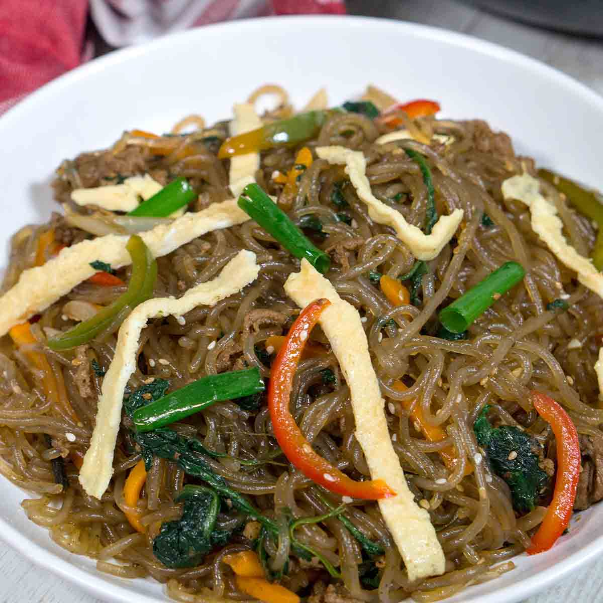

Korean Glass Noodle (Jap Chae)
Recipe by grk_tigris

Japchae, sweet potato starch noodles stir fried with vegetables and meat, is one of Korea's best-loved dishes.
The type of noodles used in this dish is made from sweet potato starch and translucent when cooked, hence the English name, 'glass noodles.' They are also gluten free and are wonderfully springy and light. These noodles can be served hot, room temperature, or even slightly chilled; they are very versatile. They can be found at most Asian markets.
Ingredients
- 1/2 lbs dried Korean sweet potato noodles
- 2 1/2 tsp sesame oil, divided
- 2 Tbsp soy sauce
- 2 tsp white sugar
- 1 Tbsp cooking oil
- 3/4 cups thinly sliced onions
- 2 carrots, cut into matchsticks
- 2 cloves garlic, finely minced
- 3 scallions, cut into 1-inch lengths
- 1/2 cups thinly sliced shiitake mushrooms
- 1/2 lbs. spinach, well washed and drained
- 1 Tbsp sesame seeds
Directions
- Fill a large pot with lightly salted water and bring to a rolling boil; stir in vermicelli pasta and return to a boil. Cook pasta uncovered, stirring occasionally, until the pasta is tender yet firm to the bite, about 5 minutes. Drain and return to the pot; toss with 1 teaspoon sesame oil. Use kitchen shears to cut noodles into approximately 8-inch lengths. Set noodles aside.
- Mix soy sauce and sugar together in a bowl. Heat oil in a large saute pan or wok over high heat and swirl to coat. Add carrots and onions to the hot oil and fry until just softened, about 1 minute. Add garlic, scallions, and mushrooms and fry for 30 seconds more. Add spinach, soy sauce mixture, and cooked noodles. Fry until noodles are warmed through, 2 to 3 minutes. Remove from heat and toss with sesame seeds and remaining sesame oil.
Chef's Note
You can use wood ear or portobello mushrooms in place of shiitake. If you use dried mushrooms, be sure to rehydrate them in boiling water first.